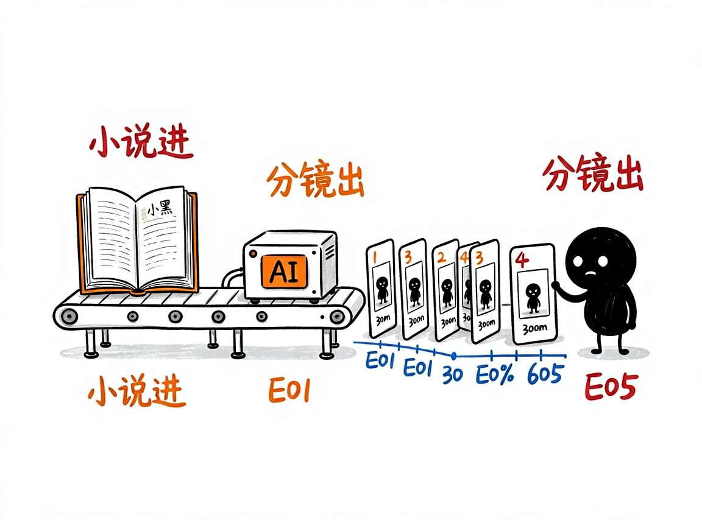

想把小说做成多集 AI 短剧？—— seedance2-storyboard 介绍
看到别人用 AI 把《林教头风雪山神庙》做成十集水墨短剧，自己也想试试，结果卡在第一步：剧本怎么拆集？角色提示词怎么写才能每集长得一样？分镜提示词是什么格式？seedance2-storyboard 把这整套流程做成了技能：小说、文章、故事大纲丢进去，产出从剧本到分镜的全套制作文件。

它到底能做什么
- 完整四幕剧本：起承转合结构，标准脚本格式——镜头描述、对白、OS/VO 旁白、闪回、字幕齐全。
- 多集分解：自动把故事拆成多集系列，每集时长可控。
- 素材资产规划：编号的角色（C）、场景（S）、道具（P）生成提示词，适配 GPT-Image-2、Seedream、Nano Banana Pro 等生图模型——编号管理保证每集角色长相一致。
- Seedance 2.0 分镜脚本：时间轴格式提示词，直接贴进 Seedance 出视频，配合视频延长功能实现集间无缝衔接。
- 文-资-视-剪工作流：剧本创作 → 资产构建 → 视频生成 → 后期剪辑，外加声音设计指导。
怎么用
场景 1：名著改编 你：把《武松打虎》做成 5 集短视频系列。 AI：四幕剧本 → 拆 5 集 → 输出武松/老虎/景阳冈的编号素材提示词 → 每集 Seedance 分镜脚本。
场景 2：自有故事 你：这是我写的短篇《项链》改编剧本大纲，帮我规划成视频系列。 AI：补全剧本 → 规划资产 → 生成分镜，附声音设计建议。
谁适合用
- 想做 AI 短剧、故事类短视频的创作者。
- 有小说/网文 IP 想视频化的作者。
- 研究 AI 视频工作流的玩家。
一点说明
本技能专注于"文→资→视→剪"中文-资-视三环的脚本生产；实际生图与视频生成在各平台完成。仓库自带林冲、武松、草船借箭、司马光、崖山海战、项链等完整示例项目可对照学习。与 smy-seedance-storyboard（上美影水墨风格专用版）同源，本版为通用 Seedance 2.0 工作流。